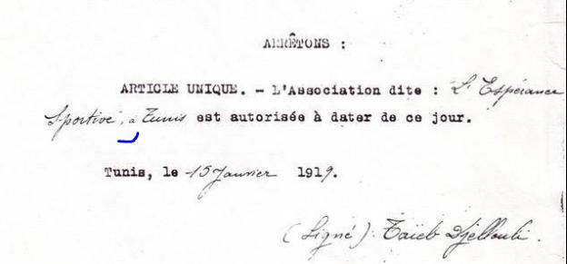
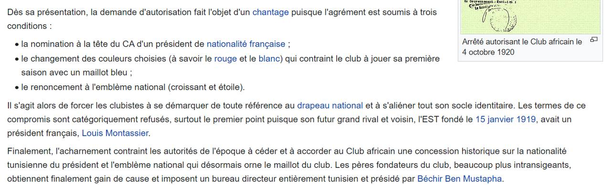
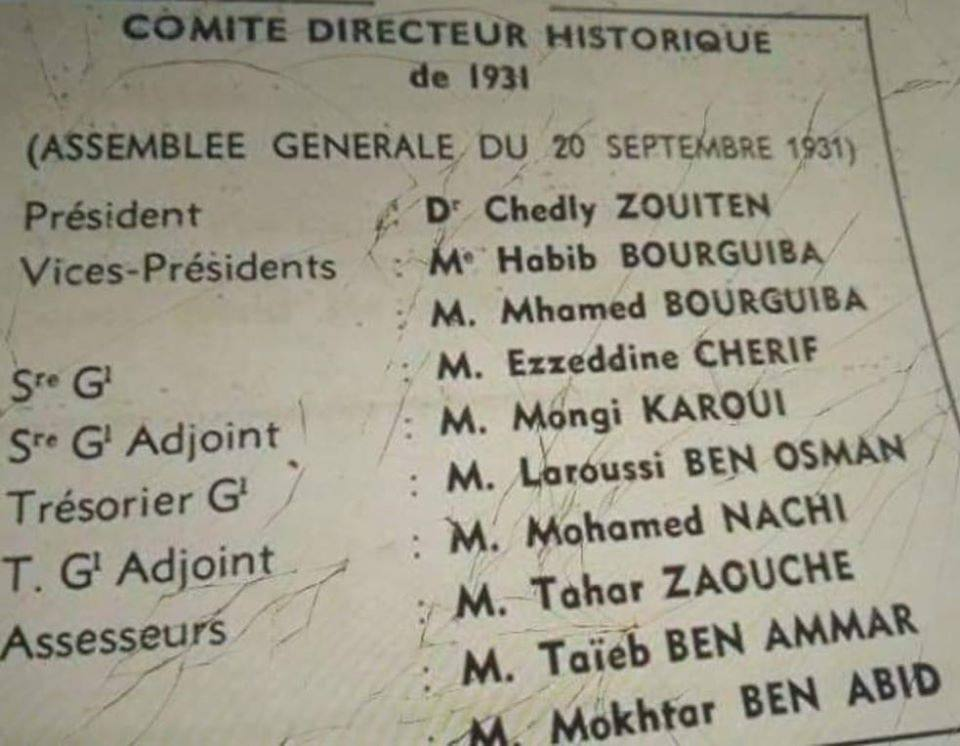
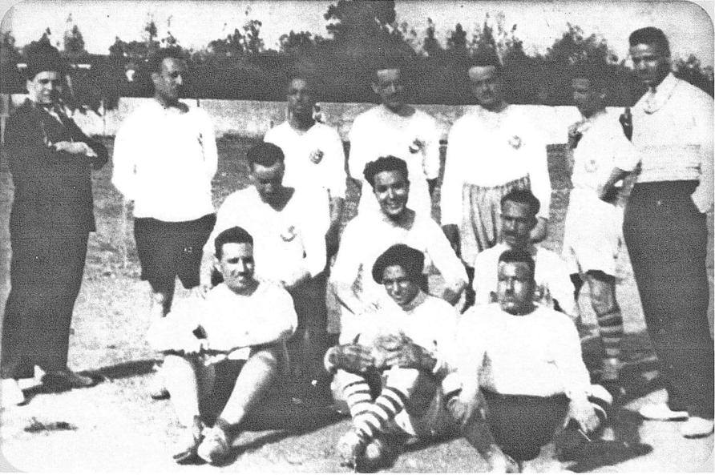
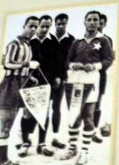
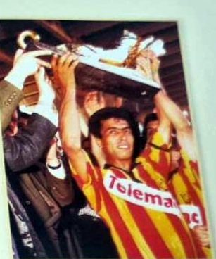
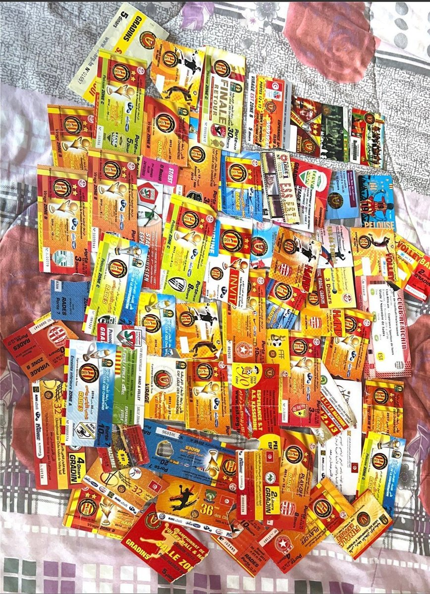
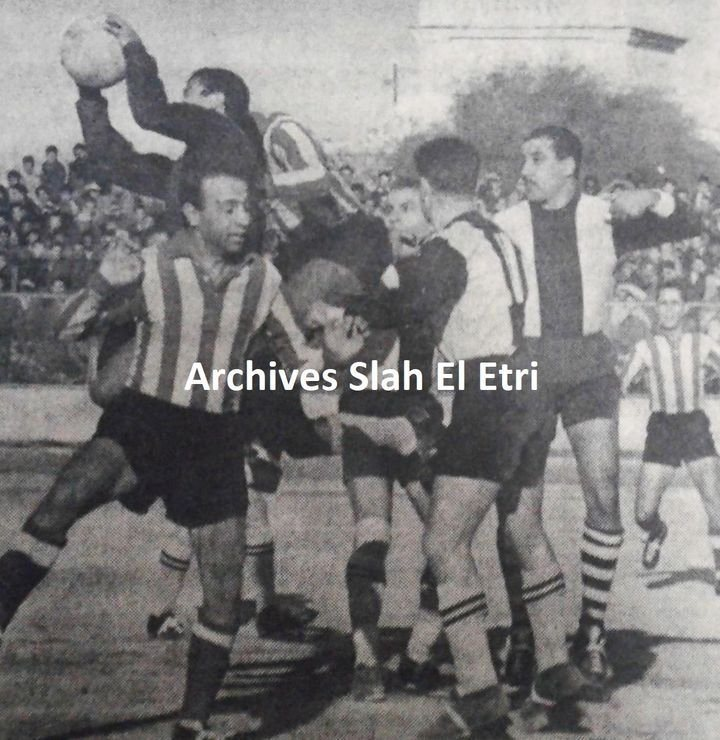

الثقة في الوثيقة
التاريخ لا يُفرض بقرار. بل يُثبت بالدليل.
الترجي الرياضي التونسي منذ 1919: الأكاذيب في مواجهة الأرشيف، وكلّ بيانات كرة القدم التونسية والإفريقية.
1947 · الترجي سنة 1947، ومن لاعبيه العربي السوداني والعروسي التسوري والمنصف زهير
النادي الإفريقي – الترجي الرياضي التونسيالرابطة الأولى · 22 نوفمبر
النتيجة النهائية 0 - 0
الدربي رقم 207 · الحصيلة: 87 انتصارًا للترجي، 69 تعادلًا، 51 للإفريقي
الترجي الرياضي التونسي – ويليتيرابطة الأبطال · المجموعة الأولى · 28 نوفمبر · 17:00 · رادس
أوّل مواجهة مع هذا النادي · أمام أندية أنغولا: المباريات: 14، انتصارات: 7، تعادلات: 5، هزائم: 2
نواذيبو – الترجي الرياضي التونسيرابطة الأبطال · المجموعة الأولى · 4-6 ديسمبر
أوّل مواجهة مع هذا النادي · أمام أندية موريتانيا: المباريات: 2، انتصارات: 1، تعادلات: 1، هزائم: 0
الترجي الرياضي التونسي – بترو لواندارابطة الأبطال · المجموعة الأولى · 18-20 ديسمبر
المواجهة رقم 5 أمام بترو لواندا · انتصارات الترجي: 1، تعادلات: 3، هزائم: 0
بترو لواندا – الترجي الرياضي التونسيرابطة الأبطال · المجموعة الأولى · 8-10 جانفي
المواجهة رقم 5 أمام بترو لواندا · انتصارات الترجي: 1، تعادلات: 3، هزائم: 0
ويليتي – الترجي الرياضي التونسيرابطة الأبطال · المجموعة الأولى · 15-17 جانفي
أوّل مواجهة مع هذا النادي · أمام أندية أنغولا: المباريات: 14، انتصارات: 7، تعادلات: 5، هزائم: 2
الترجي الرياضي التونسي – نواذيبورابطة الأبطال · المجموعة الأولى · 22-24 جانفي
أوّل مواجهة مع هذا النادي · أمام أندية موريتانيا: المباريات: 2، انتصارات: 1، تعادلات: 1، هزائم: 0
I. حقائق
ما يُروى… وما تقوله الوثائق

خطأهل الترخيص الذي وقّعه الجلولي مزوَّر؟تأشيرة 1919 الرسمية مقروءةً عن كثب: ما كُتب فيها فعلًا.1 وثيقة أرشيفية
خطأالترجي، نادٍ «فرنسي»؟USFSA، والتراخيص، والإطار المفروض على جميع الأندية في عهد الحماية.7 وثائق أرشيفية
خطأالإفريقي، حامل لواء الوطنية؟الحركة الوطنية والحركة الثقافية: الوقائع، تاريخًا بتاريخ.3 وثائق أرشيفية
خطأألم تكن الألوان الأولى للترجي الأخضر والأبيض؟ألوان الكنيسة وألوان النادي: ما تقوله صور تلك الحقبة.1 وثيقة أرشيفية
- ملف كامللماذا مونتاسييه؟ القصّة كاملة، من 1918 إلى 1920
- ملف كاملأيّ رئيس أحرز أكثر الألقاب؟
- ملف كاملكلّ النهائيات الإفريقية للترجي
- ملف كاملمن سيطر على الرياضة التونسية؟ تاريخ الألقاب، حقبةً بحقبة
- ملف كاملنهائي 2019 أمام الوداد: الفار وHawk-Eye ومحكمة التحكيم الرياضي، الملفّ الكامل
- ملف كاملشيبوب: الألقاب قبله، وفي عهده، وبعده
- السياقحمادي بن ضيف واسم النادي الإفريقي
- تحقيق مضادالترجي والأجانب قبل الاستقلال
- تحقيق مضادأجانب بالقميص الإفريقي
- جوابحصيلة الدربي: الترجي – النادي الإفريقي
- ملفالأرقام القياسية الإفريقية للترجي
- ملفتأسيسان، وتوقيتان
خرافة، قطعةً قطعة
1. ما يُروى
«ترخيص 1919 مزوَّر.»
يُقال إنّ الوثيقة تذكر «الترجي الرياضي التونسي»، في حين أنّ النادي كان يُسمّى عند تأسيسه «الترجي Sportive».
2. الوثيقة
التأشيرة الرسمية
قرار بفصل وحيد، مؤرَّخ في 15 جانفي 1919 وممضًى من الطيب الجلولي. يكفي أن نقرأه.
3. لنقرأ عن قرب
«الترجي Sportive»، à تونس
كُتب بوضوح، بالأبيض والأسود: «L'الترجي Sportive», à تونس، أي «بتونس»: المكان لا الاسم. ولا أثر لعبارة «de تونس».
4. الحكم
خطأ. بهذه البساطة.
كان يكفي تحقّق بسيط، ونظرة نزيهة إلى الأرشيف، لدحض هذه الكذبة.
اقرأ الملف كاملًاII. التاريخ
قرن في 10 فصول
 الفصل 11919باب سويقة، 1919: ميلاد الترجي
الفصل 11919باب سويقة، 1919: ميلاد الترجي الفصل 21920-1939نادي باب سويقة
الفصل 21920-1939نادي باب سويقة الفصل 31939-1955الحرب والبطولات الاستثنائية وأوّل بطولة
الفصل 31939-1955الحرب والبطولات الاستثنائية وأوّل بطولة
الفصل 41956-1969الاستقلال ونهاية عهد زويتن الفصل 51970-1979إفريقيا وقضية 1971 وطارق ذياب
الفصل 51970-1979إفريقيا وقضية 1971 وطارق ذياب الفصل 61980-1989سنوات ذياب
الفصل 61980-1989سنوات ذياب
الفصل 71990-1999إفريقيا المفتوحة الفصل 82000-2009سبعة ألقاب متتالية ولعنة إفريقيا
الفصل 82000-2009سبعة ألقاب متتالية ولعنة إفريقيا الفصل 92010-2019حتى المئوية
الفصل 92010-2019حتى المئوية- الفصل 10منذ 2019القرن الثاني
الثقة في الوثيقة
الدليل أساس الثقة.
- كلّ معلومة تُحيل إلى مصدرها.
- الوثائق تُعرض، ولا يُكتفى بذكرها.
- وحين تختلف المصادر، نقول ذلك.
III. أرشيف الأحبّاء
ألبوماتكم تروي الترجي أيضًا.
صور عائلية، تذاكر، قصاصات صحف: الوثائق التي يرسلها الأحبّاء تنضمّ إلى ذاكرة النادي، بتعليقها ومصدرها.
شارك وثيقة شاهد المشاركات


IV. بالأرقام
الترجي اليوم
V. المكتبة المرئية
بالفيديو
VI. أدوات